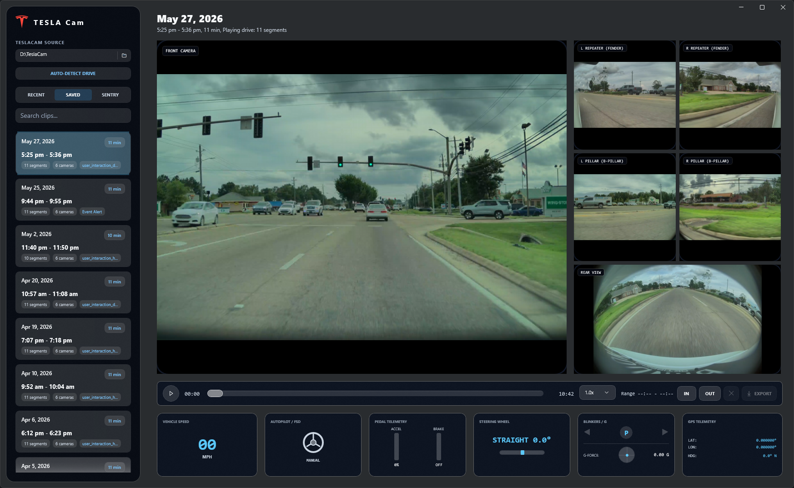
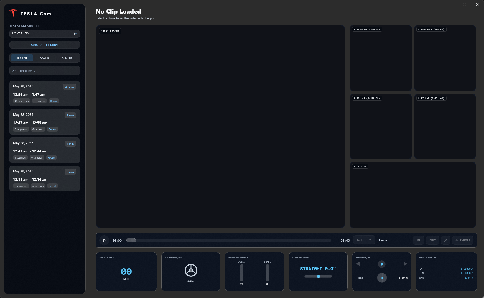

Exact-Timed Drive Sessions
Groups TeslaCam files into full drive sessions using MP4 sample and edit table timing, then stitches camera streams so a drive feels like one continuous video.
Windows TeslaCam viewer
Review a full drive as one exact-timed continuous multi-camera session with synchronized playback, embedded telemetry, FSD and manual-driving context, marker-based export, and a free core app that does not watermark your exports.
TESLA Cam focuses on the repetitive work of reviewing long TeslaCam drives: find the clip, keep the camera angles together, see FSD and manual-driving context, verify telemetry, and export only what matters.
Groups TeslaCam files into full drive sessions using MP4 sample and edit table timing, then stitches camera streams so a drive feels like one continuous video.
Show front, rear, repeater, and pillar views together in a dark translucent interface, with quick camera swapping for closer inspection.
Displays speed, left/right steering, gear, pedals, blinkers, GPS, heading, g-force, and autonomy state when metadata is present.
Add IN and OUT markers, export the current camera or all views, and validate telemetry preservation after export.
Yellow bands on the scrubber show the exact sections where the drive is manual instead of FSD.
Use a virtualized clip list, selected-clip styling, FSD percentage pills, disengagement counts, and a resizable collage view with first-frame thumbnails.
Telemetry summaries are indexed in the background, cached locally for faster repeat scans, and aligned with exact per-camera MP4 durations.
Open a mounted TeslaCam storage device, a copied TeslaCam folder, or a supported ZIP archive such as an exported all-views package.
Planned visual context will add clip photos or gallery browsing and optional telemetry overlays without covering video by default.
These captures come from the current WinUI app running against real TeslaCam footage, with the app window isolated for the public site.


Download the current Windows preview directly from this page. The recommended setup path is one download and one run: no Visual Studio, build tools, Git clone, command line, or manual extraction required. Early GitHub builds are unsigned, so Windows may show an unknown-publisher warning until Store distribution or code signing is ready.
Download the setup executable, run it, and TESLA Cam installs under your user profile with Start Menu and desktop shortcuts. If the setup registers an uninstall entry, remove it later from Windows Settings > Apps.
Use the x64 portable package if you prefer manual extraction or want to keep the preview app in a custom folder.
The PowerShell scripts remain available for fallback install and full local cleanup, including stitched playback cache, archive imports, thumbnails, and telemetry summary cache. WinGet is planned after the package name, signed installer, and release identity are stable.
The local TeslaCam viewer is intended to stay useful without a subscription. Paid features should be optional and clearly separated from the core review workflow.
Drive scanning, source watching, multi-camera playback, telemetry review, manual-driving timeline ranges, collage browsing, and core export tools are planned as free app capabilities.
The free version should not add ads, promotional overlays, watermarks, or forced branding to your clips or exports.
A future subscription may add cloud-based visual context for devices without suitable GPU or NPU hardware, richer search, and Tesla API powered features.
Optional Cash App support helps fund development, hosting, signing, testing, and upkeep. Support is not required for the free core viewer.
The public repository is the working project. The final published app name, production logo, Store identity, and macOS plan are tracked separately from the current preview branding.
Choose the published app name, logo system, and Store-ready artwork.
Finalize Partner Center identity, package signing, listing copy, and certification checks.
Plan a native Mac version after Windows playback, import, telemetry, and export workflows stabilize.
Add searchable clip photos, gallery-style review, and visual context indexing for capable GPU or NPU hardware, with optional cloud-assisted context as an opt-in subscription feature.
This project is not affiliated with, endorsed by, or sponsored by Tesla, Inc. Tesla and related vehicle names are trademarks of their respective owners. The repository is source-available for personal, non-commercial use. Cash App support, donations, and any future subscription are optional support paths, not requirements for the core free viewer.